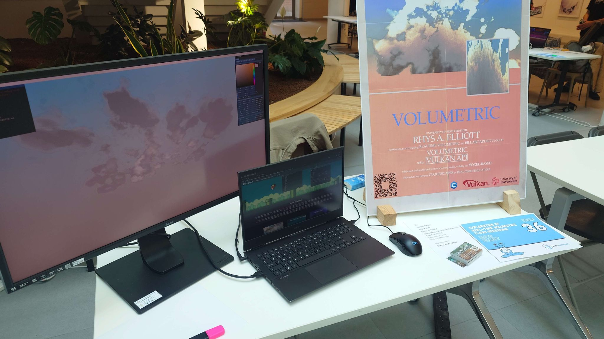
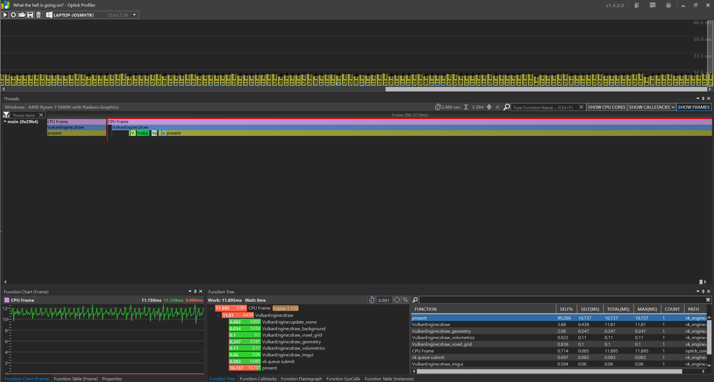
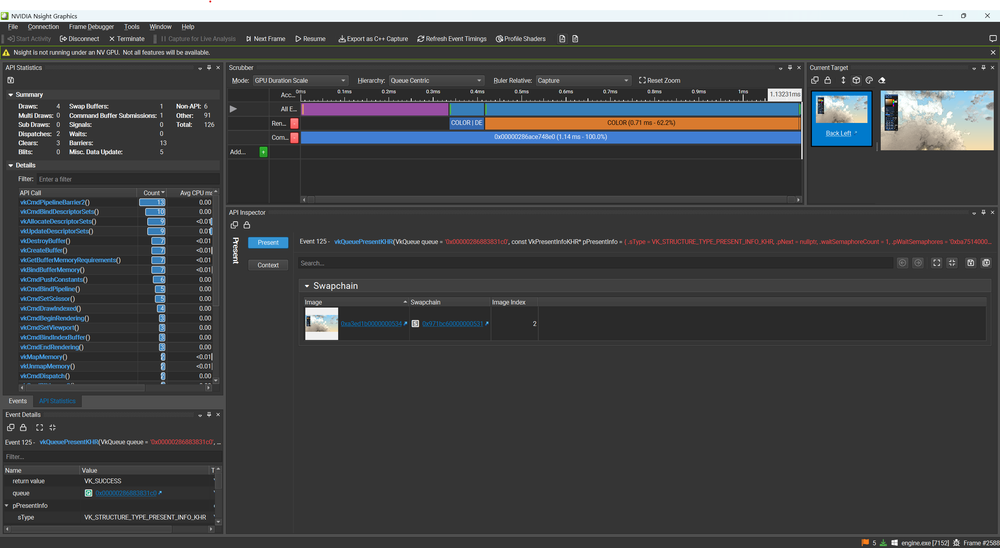
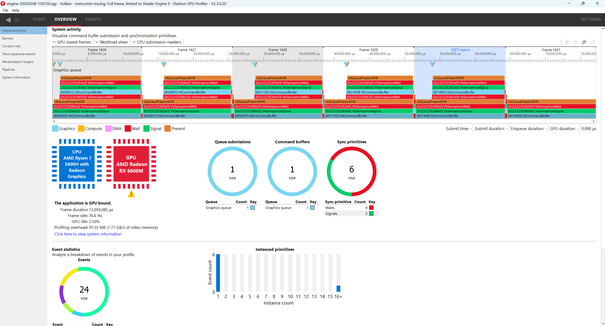

This project formed the basis of my final year dissertation "Implementing and Comparing Real-Time Volumetric and Billboarded Clouds". I implemented volumetric cloud rendering and instanced billboarded cloud rendering as part of the project. This page will focus on the volumetric implementation. This project was also shortlisted under the Games Technology category for the 2025 Game Republic Student Showcase

The repository for the project can be found at: FYP Cloud Rendering
You can download my dissertation here
There are a variety of variables the user can edit to change the appearance of the volumetric as can be seen in the demo.
The first step in rendering the volumetric is the generation of a voxel grid. This solution uses a 512x512x512 3D image to represent the voxel grid using the VK_FORMAT_R8_UNORM format in order to reduce memory overhead as much as possible.
The voxel grid takes place in a compute shader and makes use of different types of noise in order to determine the density value of the voxel at any given point. There are a few different types of noise used for different purposes. One type of noise determines the baseline shape of the clouds. Another type of noise is used to 'carve away' at these clouds in order to create detail. These two noises are combined in order to create the final result.
The exact approach used in my implementation can be seen below:
ivec3 pos = ivec3(gl_GlobalInvocationID.xyz) + PushConstants.data4.xyz;
vec3 nPos = vec3(pos) / vec3(imageSize(densityTex));
float density =0.0;
float height = nPos.y;
vec3 edgeProximity = min(nPos, vec3(1.0) - nPos);
float edgeDistance = saturate(min(min(edgeProximity.x, edgeProximity.z),edgeProximity.y));
ivec3 pos = ivec3(gl_GlobalInvocationID.xyz) + PushConstants.data4.xyz;
vec3 nPos = vec3(pos) / vec3(imageSize(densityTex));
float density =0.0;
float height = nPos.y;
vec3 edgeProximity = min(nPos, vec3(1.0) - nPos);
float edgeDistance = saturate(min(min(edgeProximity.x, edgeProximity.z),edgeProximity.y));
vec3 shapeOffset = vec3(voxelGenInfo.time * voxelGenInfo.cloudSpeed);
vec3 shapePos = nPos + shapeOffset;
vec3 noiseOffset = vec3(voxelGenInfo.time * voxelGenInfo.detailSpeed);
vec3 noisePos = nPos * voxelGenInfo.detailNoiseScale + noiseOffset;
vec4 shapeNoise =texture(shapeNoiseTex, shapePos) ;
vec4 detailNoise =texture(detailNoiseTex, noisePos) ;
float h = saturate(heightMap(height));
float fbm = dot(shapeNoise, voxelGenInfo.shapeNoiseWeights) * h;
float detailFbm = dot(detailNoise, voxelGenInfo.detailNoiseWeights) * (1.0-h);
if(fbm<=0.15 ||shapeNoise.r < 0.3 || shapeNoise.g < 0.3 || shapeNoise.b < 0.3)
{
imageStore(densityTex, pos, vec4(density,0,0,0));
return;
}
else
{
float invFbm = saturate(1.0 - fbm);
density = saturate(fbm - detailFbm * invFbm * invFbm * invFbm);
density *= smoothstep(0.0, 0.9, edgeDistance);
density*=voxelGenInfo.densityMultiplier;
imageStore(densityTex, pos, vec4(density,0,0,0));
}
Ray-Marching is the method used to generate an image from the voxel grid. A ray is fired from the viewer's point of view into the scene. At every differential point along the ray, a sample of the density is taken from the voxel grid. This sample is then used to alter the accumulataed transmittance and illumination values for that pixel. Once the raymarch has finished the pixels colour can be derived.
The method used can be seen below:
vec2 uv = gl_FragCoord.xy / voxelInfo.screenRes;
vec2 ndc = uv * 2.0 - 1.0;
vec4 currClipPos = vec4(ndc, 0.5, 1.0);
vec4 worldPos = inverse(sceneData.viewproj) * currClipPos;
worldPos /= worldPos.w;
vec3 rayDir = normalize(worldPos.xyz - rayOrigin);
vec3 toCentre = voxelInfo.centrePos.xyz - rayOrigin;
float depth = max(dot(toCentre, rayDir), 100);
vec3 samplePoint = rayOrigin + rayDir * depth;
vec4 prevClip = voxelInfo.prevViewProj * vec4(samplePoint, 1.0);
vec2 prevUV = (prevClip.xy / prevClip.w) * 0.5 + 0.5;
vec2 noiseUV = mod(gl_FragCoord.xy, 64.0) / 64.0;
vec3 noise = texture(blueNoiseTex, noiseUV).rgb;
int reprojection = int(floor(noise.r * 4.0));
bool valid = all(greaterThanEqual(prevUV, vec2(0.0))) && all(lessThanEqual(prevUV, vec2(1.0)));
vec3 finalColor;
if(voxelInfo.reprojection!=reprojection && valid)
{
outFragColor = texture(previousFrameTex, prevUV);
return;
}
float tMin=0;
vec3 voxelGridCentre = voxelInfo.centrePos.xyz;
vec3 voxelDimension = voxelInfo.bounds.xyz;
vec3 voxelGridMin = voxelGridCentre - voxelDimension*0.5;
vec3 voxelGridMax = voxelGridCentre + voxelDimension*0.5;
vec3 sunlightDir = sceneData.sunlightDirection.xyz;
vec3 sunlightColor = sceneData.sunlightColor.xyz;
vec3 toSun = normalize (sunlightDir);
float cosAngle = dot(rayDir, toSun);
float eccentricity=0.7;
float phase = max(HenyeyGreenstein(cosAngle, eccentricity), voxelInfo.silverIntensity*HenyeyGreenstein(cos(cosAngle),0.90-voxelInfo.silverSpread)) ;
vec3 backgroundColor = texture(backgroundTex, uv).xyz;
const float sunStepSize = 5.0;
const float minStep = 0.5;
const float maxStep = 5.0;
const int maxSteps = 500;
float I = 0.0;
float scatteredLight = 0.0;
float transmit = 1.0;
float t = 0.0;
int steps = 0;
int emptySamples = 0;
const int maxEmptySamples = 2;
bool fineMarch = false;
int hits =0;
while (t<=maxSteps && I < 1.0 && transmit > 0.01 && steps < maxSteps && hits <20)
{
vec3 samplePos = rayOrigin + (rayDir * t);
if (!insideBounds(samplePos, voxelGridMin, voxelGridMax))
{
t += maxStep;
continue;
}
float jitter = (noise.b * (random((gl_FragCoord.xy)- 0.5)));
t+= jitter + minStep;
vec3 uvw = (samplePos - voxelGridMin) / (voxelGridMax - voxelGridMin);
uvw = clamp(uvw, vec3(0.0), vec3(1.0));
float density = texture(voxelBuffer, uvw).r;
if (density > 0.001)
{
if(fineMarch==false)
{
fineMarch = true;
t-=maxStep;
emptySamples = 0;
continue;
}
hits++;
float stepSize = minStep;
float attenuatedDensity = density * stepSize;
const int NUM_SUN_SAMPLES = 6;
float coneAngle = radians(10.0);
float sunI = 0.0;
float sunOcclusion = 1.0;
for (int i = 0; i < NUM_SUN_SAMPLES; ++i)
{
vec2 rand = fract(noise.xy + float(i));
vec3 sunRay = sample_cone(toSun, coneAngle, rand);
float sunT = jitter + float(i) * sunStepSize;
vec3 sunSamplePos = samplePos + sunRay * sunT;
if (!insideBounds(sunSamplePos, voxelGridMin, voxelGridMax)) continue;
vec3 sunUVW = (sunSamplePos - voxelGridMin) / (voxelGridMax - voxelGridMin);
float sunDensity = texture(voxelBuffer, sunUVW).r;
sunOcclusion *= exp(-sunDensity * sunStepSize);
}
sunI = sunOcclusion * 10.0;
sunI /= float(NUM_SUN_SAMPLES);
float multiScatterApprox = 1.0 / (1.0 + density * density * 0.5);
I += transmit * phase * sunI * powder(density) * multiScatterApprox;
scatteredLight += transmit * powder(density) * phase * sunI;
transmit *= max((beer(density) + powder(density)), beer(density * 0.25) * 0.7) * (1.0 - voxelInfo.outScatterMultiplier);
t += stepSize;
}
else
{
emptySamples++;
if (emptySamples >= maxEmptySamples)
{
fineMarch = false;
t += maxStep;
}
else if (fineMarch)
{
t += minStep;
}
else
{
t += maxStep;
}
}
steps++;
}
float ambientBoost = smoothstep(0.0, 0.5 , 1.0 - transmit);
I += 0.4 * ambientBoost;
vec3 godrayColor = sunlightColor * scatteredLight * I;
finalColor = (godrayColor + sunlightColor * I )+ (backgroundColor * transmit);
outFragColor =vec4(finalColor , 1.0);
A large part of this project involved benchmarking results. As such, I had to familiarise myself with a number of tools that I planned to use. These included NVIDIA Nsight, Optick Profiler and AMD's Radeon Developer Tool Suite.
Optick Profilier was used to analyse the CPU performance of the program for the purposes of my paper.

NVIDIA Nsight was used to analyse the GPU performance, both so that it could be analysed in of itself and so that it could be compared against the CPU performance.

AMS's suite of GPU tools were used to find out exact low level details of the system the tests were ran on. This information informed some analysis.

Vulkan Base Project via Vulkan Guide
Tileable Volume Noise by Sebastien Hillaire
Cloud Textures by WickedInsignia
This project was worked on from October 2024 - February 2025 with updates in late May 2025
The project was well-scoped as strict deadlines had to be met. In this time, I was able to create a visually pleasing research artefact that allowed for my research goals to be completed.
Reprojection could have been implemented in the manner it is in Horizon: Zero Dawn. The fidelity of the end result is not as good as it could be as to make the solution performant. Implementing reprojection would allow for greater fidelity as more time could be spent on a more rigorous raymarch.
Rhys Elliott 2023. contact@rhyselliott.com